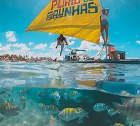
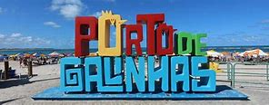

Aqui teremos varios lugares e pontos turisticos e suas descrição.
Prais de Carneiros


A Praia de Carneiros é considerada uma das mais famosas do Brasil e se destaca pelas águas claras e mornas,com arrecifes que formam piscinas naturais na maré baixa. É uma praia com muitos coqueiros e alguns estabelecimentos legais, como Bora Bora e Ariquindá.
Além do visual belíssimo, a praia de Carneiros permanece rasa por um longo trecho de areia - por isso é possível ir caminhando até a área das piscinas e as crianças podem brincar no mar sem muito perigo.
Porto de galinhas
 Olá, Porto Lover! Sou Clota, sua amiga de confiança, diretamente de Porto de Galinhas. Este não é apenas um destino, é um pedacinho do paraíso na terra. Hoje, te convido a desbravar comigo uma das praias mais lindas do Brasil. 🌴
Situado no estado de Pernambuco, Porto de Galinhas é famoso entre turistas nacionais e internacionais por suas praias paradisíacas e águas cristalinas. A região, parte do município de Ipojuca, fica a cerca de 60 km da capital Recife, tornando-se um destino acessível e muito procurado. Este artigo oferece uma visão panorâmica sobre as atrações, a cultura e tudo o que é necessário saber antes de fazer sua mala para Porto de Galinhas. Desde mergulhos em piscinas naturais até passeios de bugue, essa localidade encantadora promete experiências inesquecíveis.